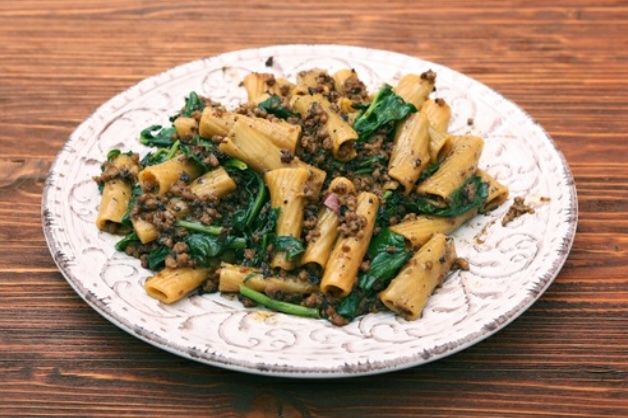

Sausage and Arugula Pasta

Description
Delicious sweet italian sausage and arugula with rigatoni pasta.
Ingredients
For single meal:
- olive oil, 3/4 tbsp (11mL)
- onion, diced,
1/6 small (13g)
- vegetable broth,
1 1/3 cup(s) (mL)
- uncooked dry pasta,
1/2 cup (47g)
- arugula, chopped,
6 tbsp (8g)
- parmesan cheese,
1 1/2 tbsp (9g)
- sweet italian sausage, raw, casings removed,
1/4 lbs (128g)
Steps
- Heat olive oil in a large, deep skillet over medium heat. Cook and stir onion with a pinch of salt in hot oil until onion is soft, 5 to 7 minutes.
- Stir sausage into onions; cook and stir until sausage is broken up and browned, 5 to 7 minutes.
- Pour about half of the vegetable broth into sausage mixture and bring to a boil while scraping the browned bits of food off of the bottom of the pan.
- Add the pasta; cook and stir pasta in hot broth. Add the remaining broth when liquid has mostly absorbed, until pasta is cooked through and most of the broth is absorbed, about 15 minutes.
- Stir arugula into pasta-sausage mixture until arugula wilts.
- Serve pasta and dust with Parmesan cheese.